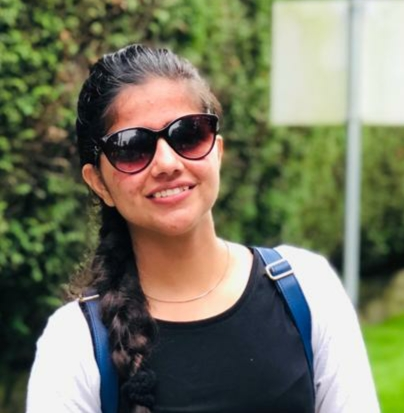
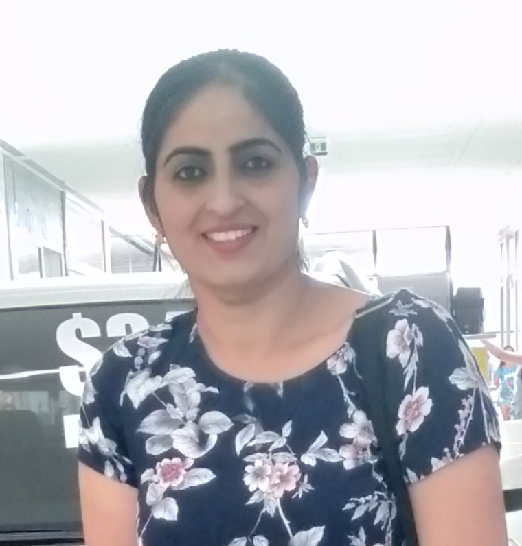

"Mr Shishir Rai is amazing! My sister really loathed
maths and starting hating it when calculus was
introduced to her in high school. But few months after enrolling in EasyLearning, she started
enjoying
Mathematics and now Maths is her forte. I feel so lucky to find EasyLearning for my sister."
-
Alisha
(Guardian)
Feedback from our Clients


"EasyLearning is fabulous! I am grateful to all my tutors who encouraged me at
every step and I am
pursuing my degree at Cambridge now and the whole credit of my success in studies goes to
EasyLearning.
I higly recommend you this coaching center if you want the best and economical service."
- Monika (Student)
- Monika (Student)

"Tutors of EasyLearning took me into surprise with their all rounder approach for
my child. Mandy, the business
owner is really a smart, juvenile and intelligent young lady who inspire the students about learning
something latest each day with a fresh energy. EasyLearning offers peer-to-peer tutoring, both
online
and in person." -
Jasmin (Parent)
Jasmin (Parent)